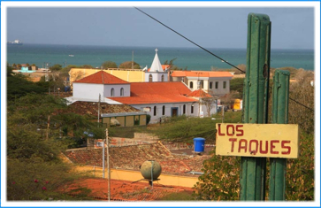
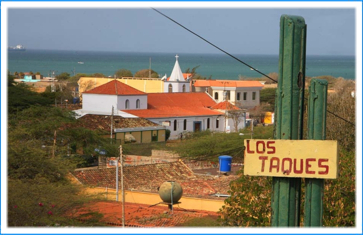

Vision
Ser un ente eficiente y eficaz que garantize soluciones acertivas a las diferentes problematias planteadas, brindando acesorias, orientacion y apoyo a los ciudadanos.

 

Ser un ente eficiente y eficaz que garantize soluciones acertivas a las diferentes problematias planteadas, brindando acesorias, orientacion y apoyo a los ciudadanos.